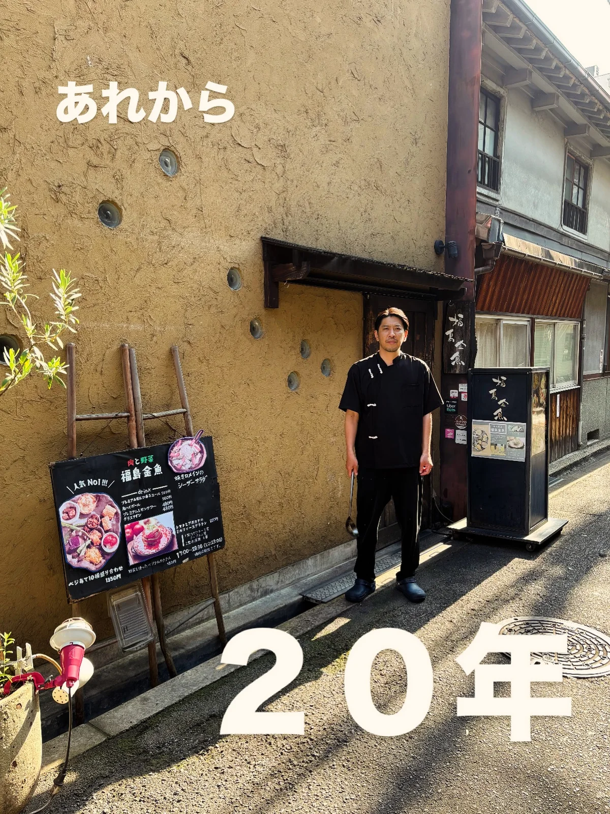

2025年6月13日
福島に来て丸２０年経ちました！！

福島に来て丸２０年経ちました！！ 私事で失礼いたしますが、 ２３歳の６月１３日に福島金魚で働き始め、 ４３歳の６月１３日を迎える事ができました。 感慨深い、、、 色々あったなぁ、、、 街も変わりましたし、 自分も変わりました！ もう、福島愛もクソも無いけど、 ずっといると言う事は好きやと思います！ 思いにふけながら、 今日もエエ仕事しよ！ ぜひ福島区にお待ちしております！！ #福島区#中華バル#中華料理#福島区グルメ#路地裏チャイニーズ有馬 #シュウマイ#麻婆豆腐